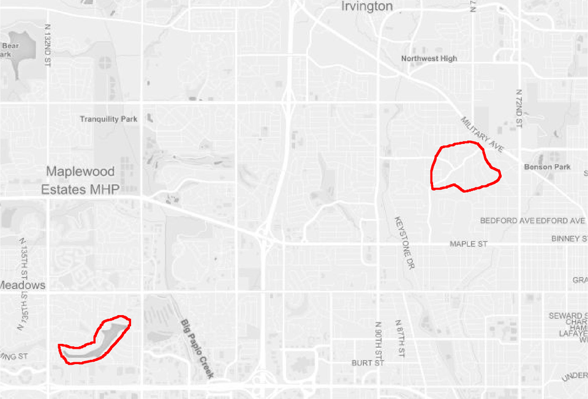

title: mapscanner tags: - maps - spatial - R authors: - name: Mark Padgham affiliation: 1 - name: Michael D. Sumner affiliation: 2 affiliations: - name: rOpenSci index: 1 - name: Australian Antarctic Division, Hobart, Australia. index: 2 date: 06 Feb 2020 bibliography: vignettes/mapscanner.bib nocite: | @* —
mapscanner is an R package that enables maps to be printed out, drawn on, scanned back in, and have the drawn components converted to spatial objects. It is intended for use in social surveys and similar endeavours in which printed paper maps are preferred over digital screens, and enables marks drawn by hand on paper maps to be converted to spatial objects. The use of paper maps is often advantageous because (i) they cost much less than computer devices otherwise needed for digital equivalents; and (ii) they may in many situations be deemed to yield more reliable or accurate results through removing the psychological barriers often associated with screen-based surveys [@Toninelli2016].
The package is designed to enable the following workflow:
ms_generate_map() function, which automatically produces both .pdf and .png versions;.pdf version to use as desired in any kind of survey environment, or use either the .pdf or .png versions in digital form for screen-based surveys..pdf or .png format; andms_rectify_maps() function, which distinguishes individual annotations, and converts each one to a spatial object able to be analysed in any desired manner.The following two sections describe the two primary functions of the mapscanner package, corresponding to the two primary steps of producing maps to be used in surveys (or other activities), and rectifying modified maps against these originals in order to extract spatial objects. The second of these sections also describes the kinds of markings able to be recognised, and the kinds of spatial objects to which these may be converted.
Having obtained and set a mapbox token as described in the package website, the ms_generate_map() function can be used to generate printable maps for a specified bounding box in both .pdf and .png formats. Usage is a simple as,
The two generated maps are saved in the current working directory (getwd()). To save maps in alternative locations, the mapname parameter can optionally specify paths. To provide finer control over the scales of maps, precise bounding boxes can also be submitted. To determine desired bounding boxes, we recommend using the ‘openstreetmap.org’ website, zooming to a desired area, then clicking the “Export” button. A window will appear which includes the bounding coordinates of the current screen. Even finer control can be gained by clicking beneath this coordinate window on the line which says, “Manually select a different area,” which brings a drag-able rectangle onto the current screen. The coordinates in the bounding box then simply need to be entered in to the bbox parameter of ms_generate_map() in the order (xmin, ymin, xmax, ymax) – or anti-clockwise from the left-hand coordinate.
The amount of detail in resultant maps is controlled by the max_tiles argument, with larger values producing more detail, and resulting in larger file sizes. The default value of max_tiles = 16L (where the L symbol tells Rto treat the value as an integer) should produce acceptable results for maps extending across hundreds of metres to a few kilometres Smaller-scale maps may require higher values, and vice-versa. Map generation is relatively fast, and so different values can be readily trialled.
Maps are generated in two formats, because the .pdf version will generally be the most convenient for printing, while the png version should be retained as the “master” copy against which to rectify subsequently scanned-in version. Behind the scenes, the function downloads a series of vector map tiles from mapbox, and converts them to a rasterBrick object from the raster package. This rasterBrick object is invisibly returned from the function:
x <- ms_generate_map ("chennai india", mapname = "chennai")
#> Successfully generated 'chennai.pdf' and 'chennai.png'"
x
#> class : RasterBrick
#> dimensions : 574, 282, 161868, 3 (nrow, ncol, ncell, nlayers)
#> resolution : 76.43703, 76.43703 (x, y)
#> extent : 8921118, 8942674, 1442749, 1486624 (xmin, xmax, ymin, ymax)
#> crs : +proj=merc +a=6378137 +b=6378137
#> source : memory
#> names : layer.1, layer.2, layer.3
#> min values : 101, 101, 101
#> max values : 255, 255, 255This rasterBrick object contains raster information for the three colour channels of the image, and so may also be used for immediate viewing within R with raster::plotRGB(x).
Standard uses of the package should not need to explicitly access or modify these data, but it is nevertheless possible to do so, and then use a custom-modified object to produce the external .pdf and .png files by submitting the rasterBrick object to ms_generate_map():
Having produced digital maps using the ms_generate_map() function as described above, and having printed, variously drawn-on, and, for paper maps, scanned the result back in to digital form, the package can then be used to rectify the hand-drawn markings against the original map with the ms_rectify_maps() function, which returns the drawn-on objects as spatial objects in Simple Features (sf) format. The only requirement is that the drawn-on objects are coloured; black or grey objects will be ignored. As described above, this has the advantage that maps may be annotated in ways not intended to be converted to spatial objects (such as adding unique identification or participant codes), through simply providing such annotations in grey or black.
The ms_rectify_maps() function has two primary arguments, specifying the names (and locations) of the original and modified map files – in that order: ms_rectify_maps(original, modified). These files should ideally be in .png formats, but will be auto-converted from .pdf if needed. The package comes with two sample maps, both in .png format. The first is the reference version needed for rectification, while the second has two red lines drawn upon it:

Converting the lines on this scanned image file is then as simple as:
f_orig <- system.file ("extdata", "omaha.png", package = "mapscanner")
f_mod <- system.file ("extdata", "omaha-polygons.png", package = "mapscanner")
xy <- ms_rectify_maps (f_orig, f_mod, nitems = 2)The result of ms_rectify_maps() can be plotted using any standard option for plotting spatial data, such as through online mapping packages such as mapview:
The ms_rectify_maps() function has an additional argument, type, which takes the following values:
type = "hulls" (the default), which returns convex or concave hulls around distinct sets of contiguously marked lines, regardless of whether those lines form closed polygons or not (see function help for details).type = "polygons", which returns the outlines traced around each individual drawn object. This tracing is pixel-based, resulting in polygons with one spatial point for each scanned pixel. This may generate spatial objects that are both overly large as well as visually pixillated. The function includes an additional downsample parameter which down-samples and smooths the resultant polygons by the specified multiple.type = "points", which returns single points (as geometric centroids) for each object. This is useful for identification of individual point locations regardless of the kinds of marks actually drawn on a map (dots, circles, crosses, or any shape, should all give equivalent results).The type of polygons assumes – and indeed requires – that the drawn objects are closed polygons (as illustrated in the first of the above figures), so care must be taken to ensure this is in fact the case. Any lines that do not form closed circles will not be appropriately translated. Algorithms for extracting objects with type = "polygons"are fundamentally different from type = "hulls". The latter applies convex or concave-hull tracing algorithms, while the former explicitly traces every individual pixel of a contiguous object, and returns the external boundary comprised of the coordinates of all pixels lying on that boundary. This will thus often produce more accurate and detailed results, yet as mentioned should only be applied where markings form strictly closed polygons. All other cases in which areal rather than point-based results are desired should use the default type = "hulls". Examples include participants being asked to colour particular areas using any desired kind of marks, enabling areal-filling scribbles can be converted to polygons representing the outer boundaries.
Maps are typically used in social surveys to delineate participants’ understanding or perception of particular regions or areas. In such contexts, surveys often result in numerous polygonal shapes representing different perceptions of a particular region. The mapscanner package provides an additional function, ms_aggregate_polys(), to aggregate polygons into a single “heat map” containing vector outlines of aggregated polygons. Each component of these aggregated polygons defines the region within which n polygons overlap.
The function is now illustrated with a slightly more complicated version of the example provided for ms_aggregate_polys(), starting by generating a series of polygons as convex hulls surrounding random points.
n <- 5 # number of polygons
polys <- lapply (seq (n), function (i) {
nxy <- 20 # number of points used to generate hull
xy <- matrix (runif (2 * nxy), ncol = 2)
h <- chull (xy)
sf::st_polygon (list (xy [c (h, h [1]), ]))
})
polys <- sf::st_sf (n = seq (n), geometry = polys)The polys object is then a Simple Features (sf) data.frame with n overlapping polygons, and an additional row, n, to identify each polygon. The following lines then convert these to aggregated, overlapping polygons, and plot the result:
aggr <- ms_aggregate_polys (polys)
polys$type <- "raw polygons"
aggr$type <- "aggregated polygons"
polys <- rbind (polys, aggr)
library (ggplot2)
ggplot (polys, aes (fill = n)) + geom_sf () + facet_wrap (~type)See the package website for the resultant plot. The object returned from ms_aggregate_polys() contains polygons ordered by level of aggregation (n), so the first entirely encloses the second; the second encloses the third; and so on. Particular contours can then be directly selected by filtering for desired values of n:
Polygon aggregation enables many interesting analyses to be performed, such as relationships between aggregation level and area:
The result (again, shown on main package website) is of course (roughly) linear, because it was derived from random data. In actual usage, results such as that are likely to generate direct insight into consensus of opinion regarding how people understand particular areas.